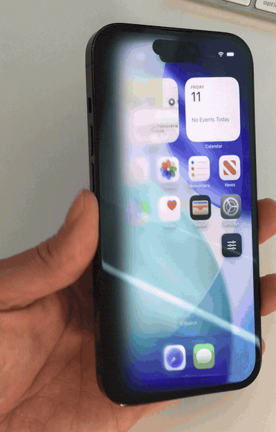

iPhone Solo
Saw that silky page turn on the iPhone Duo, but don't have the budget for a second screen?
One display. Zero hinges. Tilt your phone below, or drag the picture if you are on a desktop. The content is a flat picture hanging in 3D space, and the device is a window you look through: tilting does not move the picture, it moves your eye.
Drag left and right across the phone to tilt it.
Tuning
Tilt at which the content is fully gone.
Length of the dissolve front, in units of the root-to-far-edge distance.
Viewer distance from the screen plane, as a multiple of max(W, H).
Your picture never leaves the browser. It is read with
URL.createObjectURL and rendered locally; there is no server, no upload
and no analytics on this page.
On a real phone

How it works
One number drives everything: roll, the device's left/right tilt. From it come
two independent scalars — a tilt angle that rotates the picture in 3D about
whichever edge is currently lowest, and a progress value that sweeps a straight
dissolve front from the far edge back toward that hinge.
Every point in the picture gets a phase from that front, and two response curves read off it: blur ramps in and finishes early, at phase 0.65, while opacity only starts falling at 0.3. That deliberate offset is the whole trick — each region goes sharp, then blurred, then blurred and fading, then gone, which reads as depth rather than as a cheap crossfade.
The blur is a four-rung ladder of pre-blurred copies cross-faded by gradient masks, and each rung is drawn into a box three sigmas larger than the picture so its feathered edge melts into the background instead of ending in a hard line.